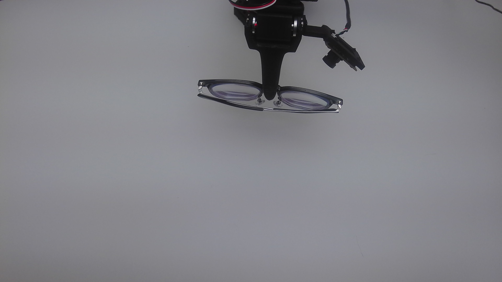
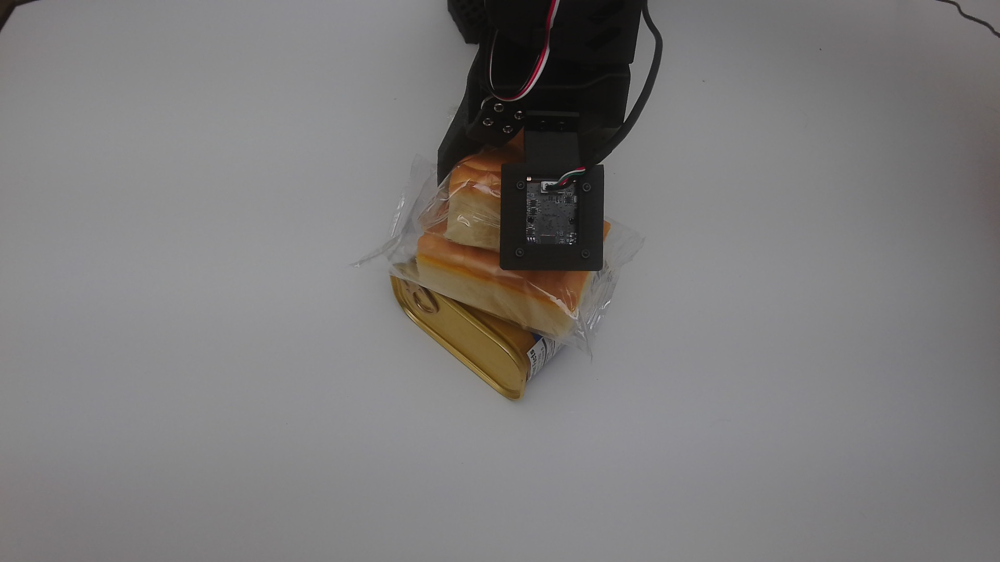
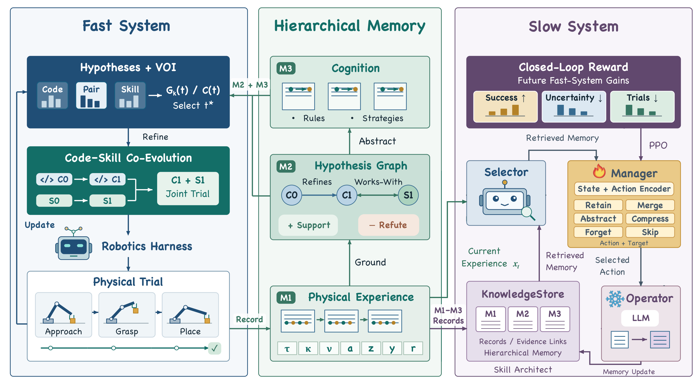
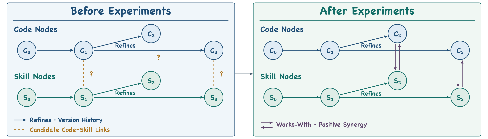
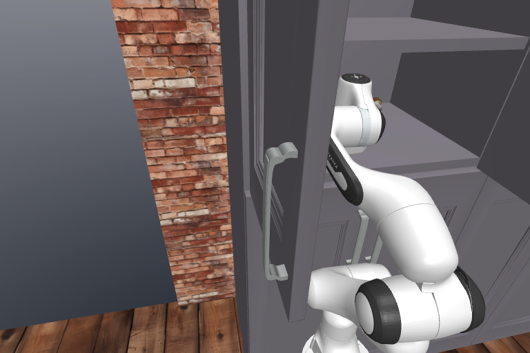
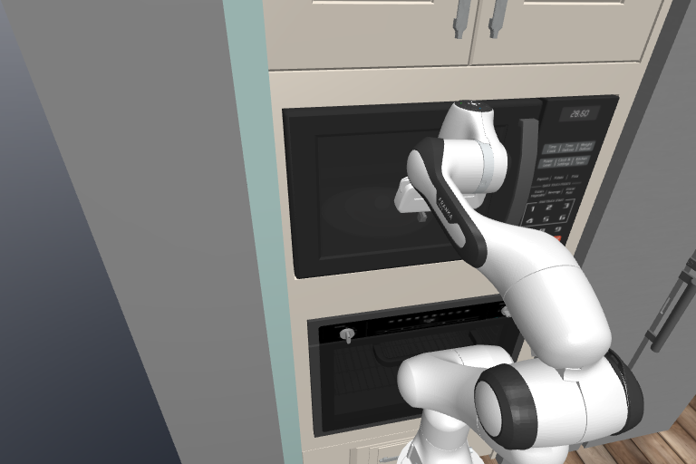
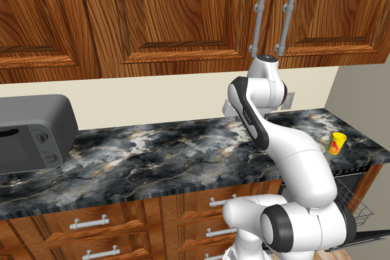
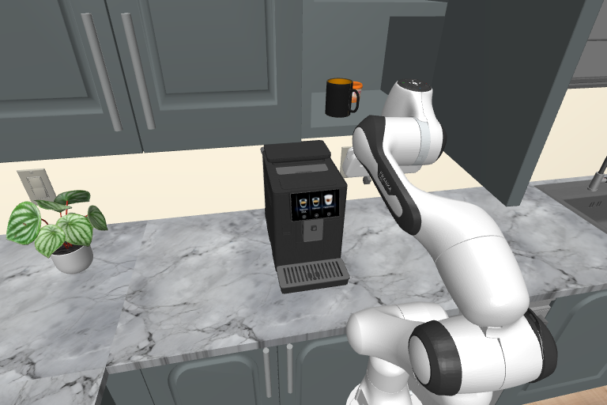
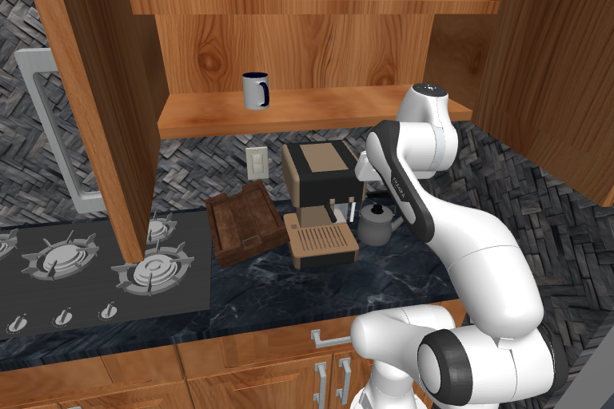
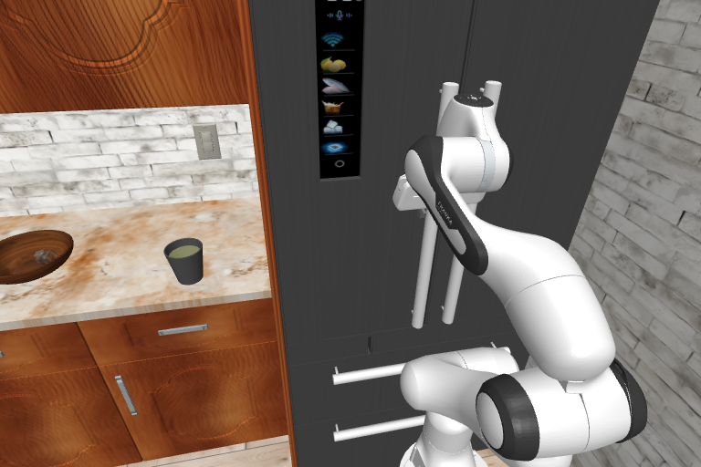

Choose Informative Experiments
The Fast System maintains competing code and skill hypotheses. Value-of-Information Experiment Selection prioritizes physical trials by expected uncertainty reduction relative to their cost.
CONTINUAL ROBOT LEARNING
Building the recursive self-improvement layer for robotics: an agentic harness that evolves its own code, skills, and memory through physical experience.


RoboCasa365 overall
LIBERO-Pro overall
Zero-shot real-robot transfer

THE PAPER
Robot foundation models provide strong visuomotor control, yet their performance can degrade when object positions or task instructions change. Further improvements often require post-training on substantial robot data, which can be costly to collect through methods such as teleoperation. Agentic harnesses can adapt around the model, but current self-evolving harnesses use robot trials inefficiently when deciding which code and skill changes to pursue. We introduce EmbodiedEvo, a self-evolving agentic harness that autonomously decides where to explore next and turns the resulting physical interaction into improved code and skills. EmbodiedEvo realizes this through a Fast-Slow Dual-System Architecture, in which competing code and skill hypotheses are maintained in a Hypothesis Graph. Value-of-Information Experiment Selection chooses physical experiments that can distinguish these hypotheses. Their outcomes guide Code-Skill Co-Evolution. The Slow System builds Hierarchical Memory, and Reward-Grounded Memory Learning selects effective memory according to their value for later Fast-System improvement. On RoboCasa365, EmbodiedEvo reaches 77.0% overall success and 71.3% on Composite-Unseen, compared with 40.1% for the best baseline. EmbodiedEvo also reaches 86.8% overall success on LIBERO-Pro. Beyond benchmark performance, EmbodiedEvo transfers zero-shot to real-world robot, achieving 71.3% overall success across multiple challenging tasks.
FROM INTERACTION TO IMPROVEMENT
The Fast System maintains competing code and skill hypotheses. Value-of-Information Experiment Selection prioritizes physical trials by expected uncertainty reduction relative to their cost.
Matched trials compare joint code-skill execution with each component from the same initial states. The Hypothesis Graph retains refinement history and relations supported by positive joint gain.
The Slow System builds Hierarchical Memory from execution records, hypotheses, and reusable cognition. Reward-Grounded Memory Learning selects memory actions based on later Fast-System improvement.

GENERALIZATION IN SIMULATION
With the robot foundation model frozen, RoboGenesis reaches 71.3% success on RoboCasa365 Composite-Unseen, compared with 40.1% for Harness VLA. LIBERO-Pro evaluates instruction-redirection (T) and position-swap (S) perturbations.






Composite-Unseen · Success Rate (%)
Overall · Success Rate (%)
Simulation evaluation: 10 random seeds and 10 trials per seed for each task. Evolution and evaluation use mutually disjoint seeds.
ZERO-SHOT SIM-TO-REAL TRANSFER
The simulation-evolved agentic harness transfers to a physical SO-101 arm with a frozen SmolVLA backbone. Overall success rises from 46.0% to 71.3% across five tasks spanning multi-step manipulation, semantic and arithmetic reasoning, and precision grasping.
Pick up the Oreo and place it in the red bowl.
Select the chip whose value × 5 = 100.
Stack two cakes on a can of luncheon meat.
Lift the glasses at the bridge.
Fold the towel.
| Task | SmolVLA | RoboGenesis |
|---|---|---|
| Oreo to Red Bowl | 70.0% | 86.7% |
| Poker Chip Selection (×5=100) | 10.0% | 90.0% |
| Stack Two Cakes on a Can of Luncheon Meat | 63.3% | 76.7% |
| Glasses Bridge Grasp | 60.0% | 56.7% |
| Towel Folding | 26.7% | 46.7% |
| Overall | 46.0% | 71.3% |
SmolVLA is fine-tuned before evaluation using 50 teleoperated demonstrations per task, then remains frozen during all trials. The agentic harness transfers zero-shot from simulation. Success on glasses bridge grasp falls from 60.0% to 56.7%.